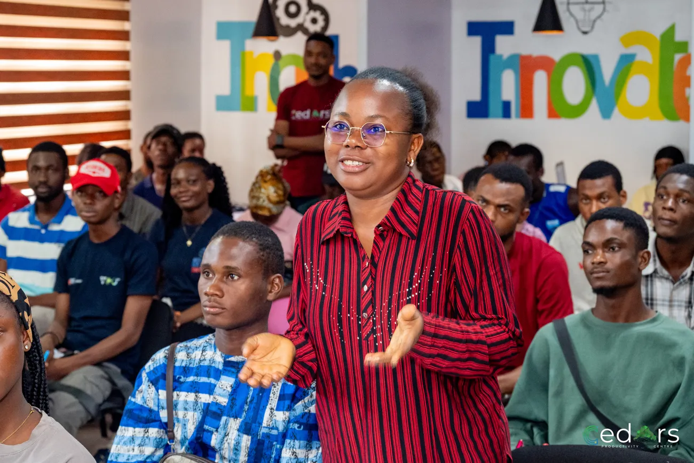
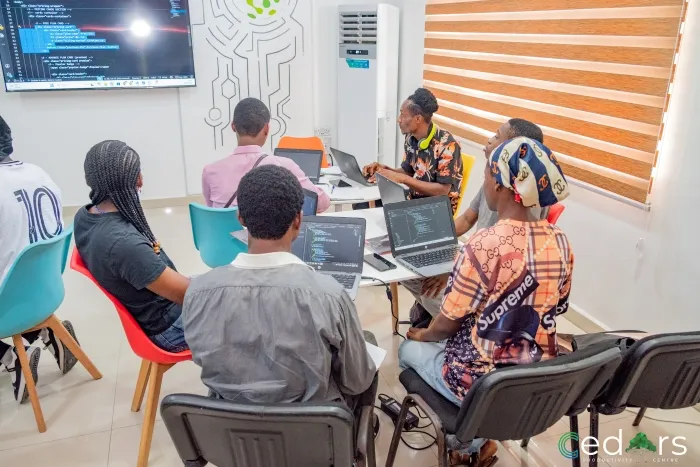

Sponsorship
SponsorshipSponsorship
Fund a place so a participant pays nothing.
Support access to practical training and programme delivery.
APPLICATIONS ARE CURRENTLY CLOSED
12 WEEKS · BONNY ISLAND
NO COST TO SELECTED PARTICIPANTS
MENTOR-LED · PROJECT-BASED
SEVEN TRACKS TO CHOOSE FROM
DELIVERED BY CEDARS PRODUCTIVITY CENTRE
Partner with DILP or make a donation to support practical digital training, mentorship and opportunities for young people in Bonny Island.
Developing digital skills. Building responsible leaders.


A place to learn.
A chance to grow.
Partners widen access, deepen the work and connect participants to real opportunities. Here is where support goes.
Fund a place so a participant pays nothing.
Support access to practical training and programme delivery.
Give a few hours a month to guide a team.
Share your experience, review work and help participants grow.
Supply laptops, tools or connectivity for the cohort.
Help put the right resources in the hands of learners.
Open a door to an internship, a job or a live brief.
Connect practical learning with real-world experience.
Start with a conversation about how you’d like to contribute.
Tell us about your organisation, expertise or resources.
Discuss where your support can meet programme needs.
Shape a practical contribution with the DILP team.
Support a place on the programme, contribute to delivery, or help provide the tools participants need to learn and build.

No cost to selected participants. Your support helps strengthen that pathway.
Whether you’re giving as an individual or bringing an organisation on board, there’s more than one way to get involved.
Yes. Mentorship, equipment, connectivity and opportunity pathways are all ways to support DILP. Share your expertise, provide tools or open a door to an internship, a job or a live brief.
Yes. Start a partnership enquiry to discuss sponsorship, mentorship, equipment or opportunities that fit your organisation and the programme’s needs.
Support can go towards sponsored places, programme delivery, laptops, tools and connectivity. Discuss your intended contribution with the DILP team.
This page starts a donation enquiry. Discuss contribution arrangements with the DILP team; it does not collect card or bank details.
Bring your resources, your experience or your network. Help young people turn learning into practical work.